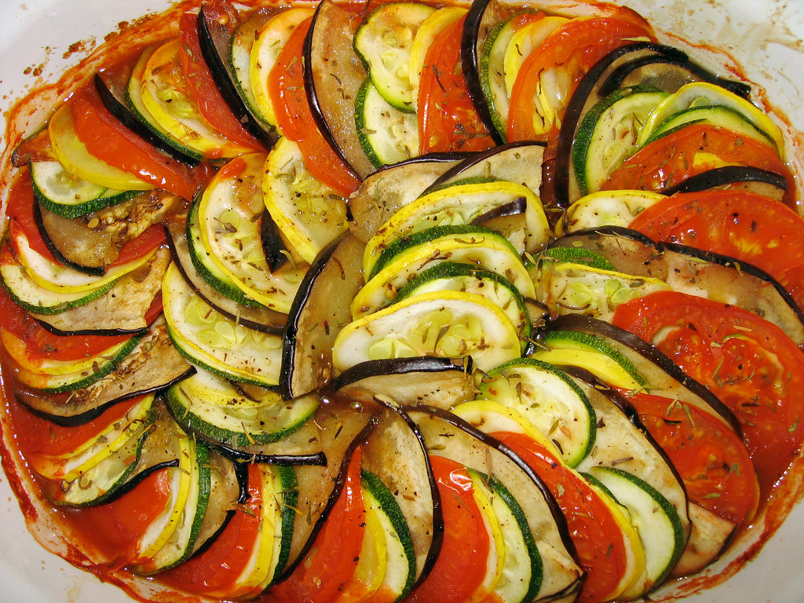

Easy Ratatouille

Ratatouille is a traditionally French dish originating from the province of Nice. It is a stewed vegetable dish consisting of tomatoes, eggplant, onions, garlic, zucchini, peppers, and usually some type of leafy greens like spinach. The word ratatouille comes from the Occitan word ratatouille, meaning “to stir up”. Since the late 1700s, this dish was generally a “course stew,” but has evolved to become a layered vegetable dish.
Yields 8 Servings
Ingredients
- tablespoon olive oil
- 2 cloves garlic, minced
- 1 large onion, sliced
- 2 medium eggplants, chopped
- 4 small zucchini, sliced
- 2 green bell peppers, chopped
- 5 medium red tomatoes, chopped
- 1 tablespoon fresh basil, cilantro, or parsley, chopped
- 1/4 teaspoon black pepper
Directions
- Heat oil in large skillet over medium heat.
- Add garlic and onion and cook until onion is soft.
- Add eggplant and zucchini. Cook until lightly browned and almost tender.
- Add the green pepper and tomatoes. Cook for about 5 minutes.
- Add fresh herbs and pepper. Cover the pan and cook for 5 more minutes.
Sources
Recipe from the CUCE-NYC FMNP Recipe Collection 2015
"Ratatouille" by benmillett is licensed under CC BY-NC-ND 2.0